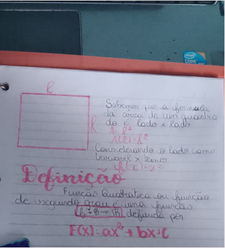
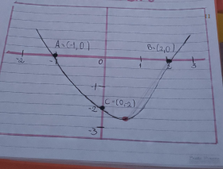
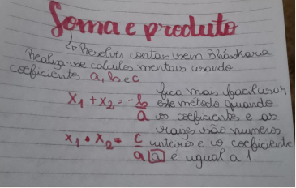
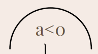
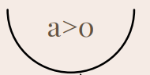

Trimestre 1
Função Quadrática
Definição de função Quadrática
-
Fórmula
f(x)=ax^2+bx+c
-
A, B e C são números reais, porém "A" precisa ser diferente de zero;
-
O gráfico sempre será uma parábola;
-
Domínio é D(f)=R, porém em certas situaçãoes pode haver uma mudança
-
A imagem depende da concavidade e do vértice da parábola;
Função e Gráfico
-
Na função 𝑓: ℝ → ℝ definida por 𝑓(𝑥) = 𝑥 2 − 𝑥 − 2, temos:
-
Concavidade para cima
-
Dois pontos de intersecção com o eixo x (A e B);
-
Um ponto de intersecção com o eixo y, o ponto C
Valores ou imagem da função em um ponto
-
Em Funções Quadráticas podemos nos deparar com casos onde necessitamos fazer cálculos para encontrarmos pares ordenados
Resolvendo sem Bháskara
Concavidade
-
Quando dada a equação da função, é necessário saber a concavidade, para isso sempre vamos analizar o valor de "A"
-
Quando "A" for menos que zero a concavidade é voltada para baixo
 -
Quando "A" for maior que zero a concavidade é voltada para cima:
